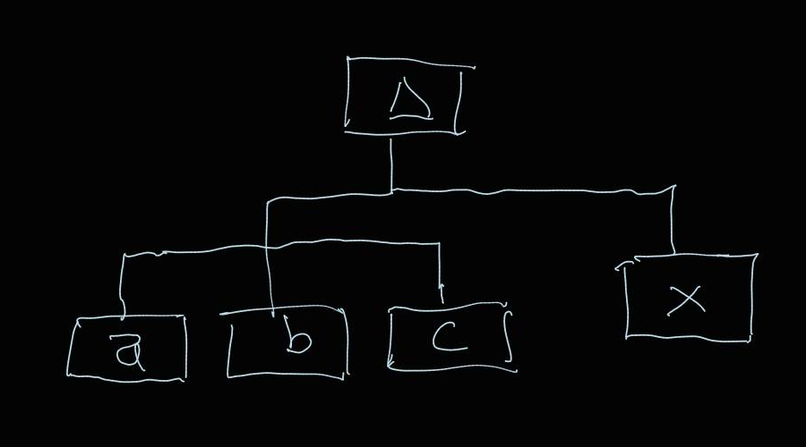
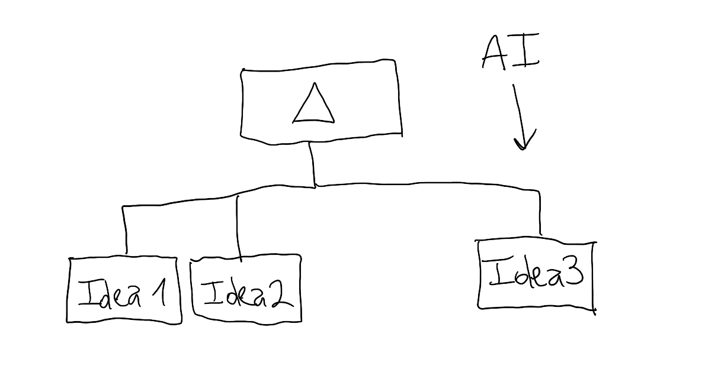
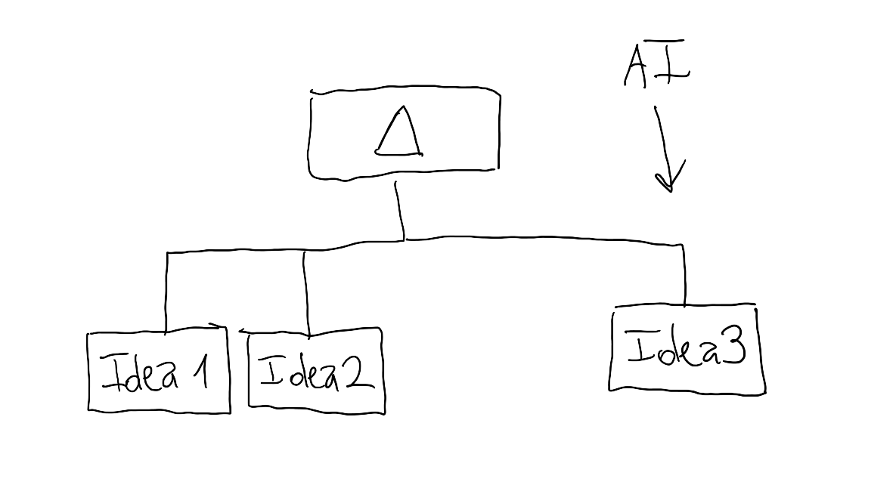
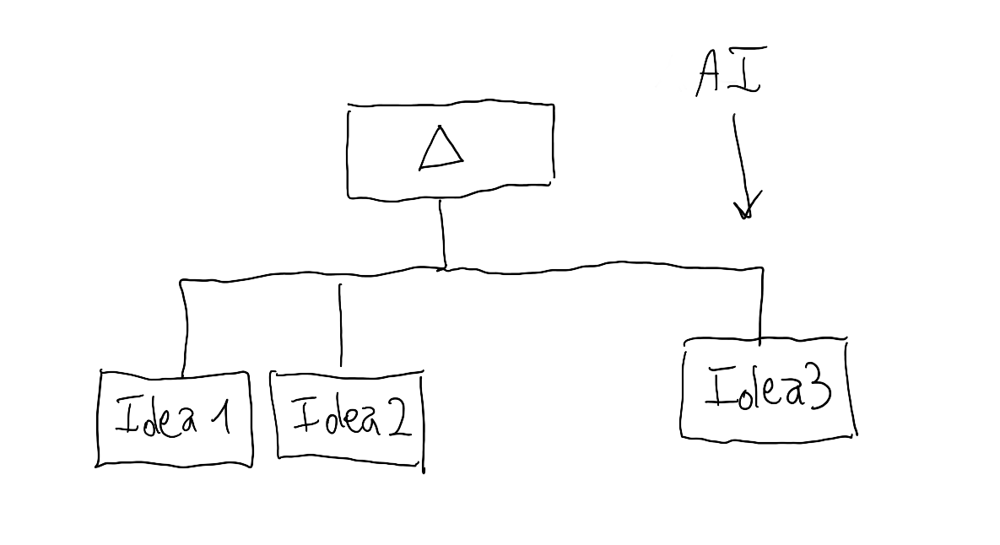
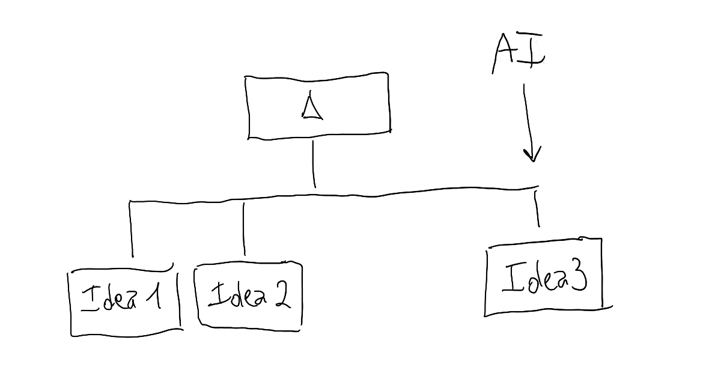

loading photos…
I already have a lot of activites for enjoy the time: take photos, read books, travel, eat extravagances, cooking extravagances, play board games, play videogames (If you play age of empires or starcraft, your are one of mine), but honest: I was born to put down roots in my chair. Since my 9, I had a with big PCs, that my dad and mom bought from a bankrupt company.
Today I have a laptop on my phone, and I can connect throught Tailscale to an instance of Claude Code in my Raspberry and programming when I go to take a overestimulating coffee.
Today we live in a very different word compared to the 2000s. We can create, build proyects, and developing in an exponencial velocity. Build know is open to everyone, in a very fast way, maybe with a lack of personal flavour, but solved throught work and improving the results manually.
This changes a lot of productivity related to the production of *products* and code, with intermitent instructions to the LLM the core of the building of the final product, not the action of programming.
You can thing the action of code more close the a P2W activity in general, and the general knowledge about maths, code construction and arquitecture a more valuable asset: you can build thrash code in the same velocity as good code.
I enjoy very much this epoch for the code: I build and deply pages, programs and every I wanted in this years with excelptional velocity. I was never an exceptional programmer. The section [posts] in this page is a proff of that.
The intellectual activities must be improved with the interaction of IA. Read, construct concept maps, connect ideas and resume knowledge are so much accesible, and more easy to search and construct
In the last year I reconnect with the reading activities expanding the connection of phylosophy, maths and science, with a new level of interpretation and interconection I never can allow to build in days (maybe in months before good AI models).
Examples: Currently Im reading All of Statistics of Wasserman, a wide vision of statistics, and I forgot a simple demostration of telescopic sumatory divergence. I cut the section with the pencil of my samsung tablet and tell in the aplication AI to expand, how can I make that demostration. My university math teachers never can reach the patience and the level of details and personalized response of that chat.
Example 2: Im reading and worried about actual implications about polarization in politics. With a long conversation and a actual book I already read, in a long chat and pointing references and talking about we found the book Gekaufte Zeit: Die vertagte Krise des demokratischen Kapitalismus, with a very good explaination of the decay of capitalism without a succesor in dissorder and dissaray.




